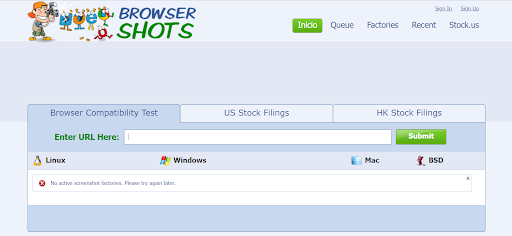

BrowserShots
http://browsershots.org/Esta es una increíble herramienta online que es capaz de sacar un pantallazo para toda una gama de distintos navegadores. Nosotros no nos tenemos que preocupar más que poner una URL y podremos ver el resultado para todos los navegadores imaginables.
